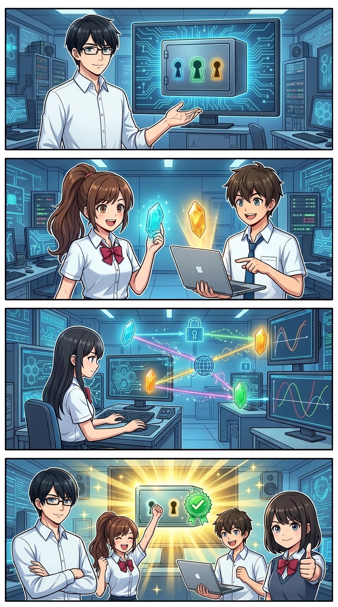
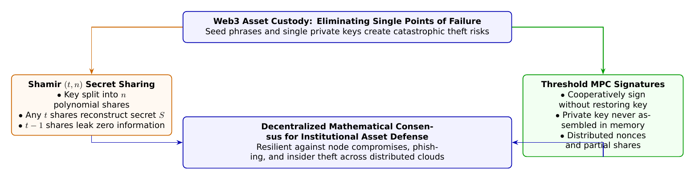

🎨 4コマ漫画挿絵（文字なし）
AI高解像度生成
▲ 【挿絵】青葉台高校 情報科学部＆帝都科学大学サイバーディフェンス・ラボでの実践シーン
💬 4コマ漫画キャラクターセリフ (Story Dialogue Script)
日・英バイリンガル (JA / EN)[蓮]「従来のウォレットは単一障害点（SPOF: Single Point of Failure）の塊なんだよね」
[Ren] "Conventional wallets are essentially one massive Single Point of Failure!"
[葵]「3個の断片のうち、任意の2個が集まれば鍵が復元できるけど、1個だけ盗まれても情報は完全にゼロなんだ！」
[Aoi] "Any 2 of 3 shards reconstruct the key, yet a thief with 1 shard gains literally zero information!"
[蓮]「鍵そのものが世界のどこにも実体として存在しないのに、送金トランザクションだけが承認されるんだね！」
[Ren] "The full key never physically exists anywhere in memory, yet the transfer transaction is securely validated!"
[全員]「分散型社会の真の守護神、マルチパーティ計算の魔法で未来を拓こう！」
[All] "The true guardian of decentralized society: forging tomorrow with the magic of MPC!"
📖 小説本文
初冬の冷たい風が吹き抜ける放課後、青葉台高校の情報科学部室。橘葵は、机の上に置かれた金属製のプレートと、そこに刻印された12個の英単語――暗号資産ウォレットのリカバリーフレーズ（BIP-39ニーモニック）を前に、頭を抱えていた。
「……ねえ悠真先輩、これ、プレッシャーで胃が痛くなるよ」
葵が机に突っ伏した。 「情報科学部の共有プロジェクトで管理してる暗号資産テストネットの鍵なんだけど、もしこの金属プレートを部室で失くしたり、誰かにスマホでパシャって盗撮されたら、すべての資産が一瞬で盗まれちゃうんでしょ？ 銀行なら窓口で再発行してくれるのに、ブロックチェーンは秘密鍵を失ったら自己責任の自己破産なんて、怖すぎて夜も眠れないよ！」
神崎蓮が頷きながらタブレットを操作した。 「まさにそれが、暗号資産業界で毎年何千億円もの盗難被害を出している**単一障害点（SPOF: Single Point of Failure）**の問題ですね。取引所がハッキングされたり、CEOが急死してコールドウォレットの秘密鍵が誰にも分からなくなったり、PCに感染したインフォスティーラー（情報窃取マルウェア）に鍵ファイルを抜かれたり……」
「その絶望的な脆弱性を根本から打ち破る暗号理論の切り札があるんだ」
城崎悠真が立ち上がり、黒板に綺麗な2次曲線の放物線を描き始めた。 「鍵を『1つの場所』に置くから危険なんだ。鍵を数学的に粉々に砕き、世界中の異なるサーバやスマートフォンに分散して持たせる。そして、**いざ送金するときですら、秘密鍵を一度も元の形に復元することなく署名だけを完成させる**。それが、横浜国立大学SPIRALのNexCrypt Lab（四方順司教授・佐藤慎悟准教授ら）も追究する**『セキュアマルチパーティ計算（MPC: Secure Multi-Party Computation）』**と**『閾値署名（Threshold Signature）』**の神髄だよ」
白石結衣の目が生き生きと輝いた。 「1979年にアディ・シャミア（Adi Shamir）が考案した**『シャミアの秘密分散法（Shamir's Secret Sharing）』**と、現代の分散合意プロトコルの融合ですね！」
---
📊 セキュリティ構造図解 (TikZ LuaLaTeX生成)
国家安全基準・工学図解
▲ 【技術構造図】IPAデジタルスキル標準・国際規格に準拠した仕組みのモデル化